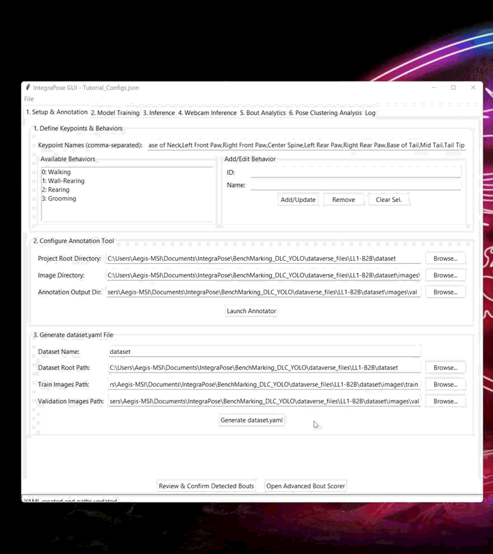
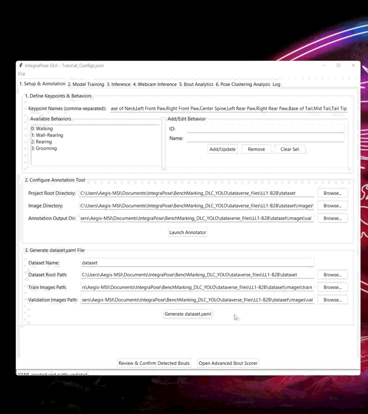

IntegraPose: Simultaneous Pose & Behavior Classification
Welcome to IntegraPose! This guide provides an interactive walkthrough of the powerful tool designed to streamline animal behavior analysis using deep learning. The goal is to overcome the challenges of fragmented workflows by unifying pose estimation and behavioral classification.
The IntegraPose Workflow at a Glance
The entire analysis process is a structured pipeline, moving from raw video to quantitative insights. Each stage builds upon the last. Hover over a node below to see its role.
1. Annotate Data
2. Train Model
3. Run Inference
4. Analyze & Visualize
Beyond Keypoints: From Tracking to Discovery
A common challenge in behavioral research is knowing what to do after getting keypoint tracking data. Whether from SLEAP, DeepLabCut, or IntegraPose itself, you have thousands of coordinates, but the path to answering scientific questions isn't always clear. This section outlines the types of post-hoc analyses IntegraPose is designed to facilitate, turning your raw data into testable hypotheses.
1. Foundational & Comparative Analysis
This is the first step after tracking. It involves extracting fundamental kinematic variables (like speed, posture, and gait metrics) and then comparing these metrics between your experimental groups.
- Validation: Are the calculated speed and posture metrics within an expected range for the animal model? This confirms data quality.
- Locomotor Hypotheses: Do mice from one group exhibit a significantly different stride length or speed compared to another group during walking?
- Coordination Hypotheses: Is the step width or the coordination pattern (stance phase percentage) different between the two groups?
2. Kinematic Signature Analysis
This analysis goes deeper by asking *how* two groups perform the *same* behavior differently. Instead of just knowing an animal is "walking," you can quantify the unique postural or dynamic signature of that walk.
- Qualitative Differences: When both groups are rearing, is the average body elongation significantly different between them, suggesting a different posture?
- Motor Deficits: Does one group of mice exhibit a lower average turning speed during a specific exploratory behavior, suggesting a difference in motor control?
3. Behavioral Transition & Preparatory Posture Analysis
Behavior is not static. This analysis focuses on the brief, information-rich windows of time immediately *before* and *after* an animal switches from one behavior to another.
- Motor Planning: Do animals consistently slow down or adopt a specific posture in the 30 frames *before* initiating a grooming bout? Is this preparatory pattern different between groups?
- Transition Mechanics: Is the change in body speed more abrupt (a steeper slope) for one group when transitioning from "Walking" to "Wall-Rearing"?
4. Causal Network Analysis
This advanced analysis moves beyond correlation to infer causation. Using methods like Convergent Cross-Mapping (CCM), it tests for causal relationships between pairs of dynamic variables to build a network of influence.
- Balance Control: Does tail base speed *causally influence* turning speed, or are they just correlated? Is this causal link stronger in one group?
- Gait Coordination: Is there a stronger causal link from hindlimb speed to overall body speed in one group, suggesting a different primary source of propulsion?
Installation Guide
Follow these steps to set up the IntegraPose environment. Using Conda is highly recommended.
Installation Steps
-
1
Prerequisites
Ensure you have Anaconda/Miniconda and Git installed. An NVIDIA GPU with CUDA is highly recommended for performance.
-
2
Clone the Repository
Open a terminal and run the following commands:
git clone https://github.com/farhanaugustine/IntegraPose.gitcd IntegraPose -
3
Create & Activate Conda Environment
Use the provided file to create an environment with all dependencies. The file is configured for CUDA 12.4 by default. For CPU-only, you must edit the
environment.ymlfile first.# This creates the 'IntegraPose' environmentconda env create -f environment.yml
# Activate the new environmentconda activate IntegraPose -
4
Launch the Application
Once the environment is active, you can start the GUI.
python main_gui_app.py
Getting Started: Data Preparation
Correct data preparation is the most critical step for successful model training.
A. Extract Frames from Videos
You must convert your videos into individual image frames. You can use the command-line tool FFmpeg or the Frame Extractor graphical tool.
Option 1: FFmpeg (Command Line)
This command extracts high-quality PNG frames.
Option 2: Using Frame Extractor (GUI)
For a user-friendly alternative, use the included Python-based tool. Launch it from your terminal (with the Conda environment activated) by running:
The tool offers three extraction modes:
-
Interactive Mode: Manually browse through the video and save frames of interest. This is ideal for selecting very specific moments.
Controls:
- D / A: Play forward / reverse.
- E / Q: Step one frame forward / backward.
- Spacebar: Pause playback.
- S: Save the current frame.
- T: Toggle on-screen info text.
- Mouse Wheel: Zoom in/out.
- Middle Click: Reset zoom.
- ESC: Quit. - Stride Sampling: Extracts a set number of frames by taking continuous "strides" (e.g., 10 frames in a row) from random starting points in the video. Useful for capturing short behavioral sequences.
- Random Sampling: Extracts a specified total number of unique frames, chosen completely at random from the entire video. Good for creating a diverse, unbiased dataset.
B. Required Directory Structure
IntegraPose expects this structure inside your project root directory. The annotator will generate labels for you, but you must provide the correct path using the "Browse" buttons from the GUI. The splitter script (detailed below) can also create this structure automatically.
C. Split Data into Train/Val Sets (Optional Script)
After extracting your frames into a single folder, you need to split them into `training` and `validation` sets. An included command-line script can automate this process, ensuring a balanced (stratified) split of behaviors across both sets.
Standard Splitting Mode
This command will take all images and labels from a source directory and split them into `train` and `val` subdirectories inside your output project folder, according to the required structure.
# Example for an 80/20 split:
python split_data.py ^
--source_images_dir "path/to/all_frames" ^
--source_labels_dir "path/to/all_labels" ^
--output_base_dir "path/to/YourProject" ^
--val_split_ratio 0.2
Advanced: Extraction Mode
The script can also create a new, smaller dataset containing only images where specific classes (behaviors) appear. This is useful for targeted analysis or improving model performance on rare behaviors. Use the `--extract_classes` flag and provide the class IDs you want to isolate.
# Example to extract only frames with class 0 and 2:
python split_data.py ^
--source_images_dir "path/to/all_frames" ^
--source_labels_dir "path/to/all_labels" ^
--output_base_dir "path/to/Extracted_Data" ^
--extract_classes 0 2
GUI Walkthrough
This section details each tab in the IntegraPose application. Click on a tab name to expand its details.
 



Advanced: Customizing the YOLO Model
While default models work well, you can achieve superior performance by customizing the model architecture for your specific needs. This involves editing the model's .yaml file to swap or add different neural network modules.
Model Anatomy: An Intuition
A YOLO model has three main parts. Understanding their roles helps you decide where to make changes.
- 🧠 Backbone: The "Visual Nervous System." It processes the input image and extracts raw visual cues like textures, edges, and color gradients. This is where the model learns to "see" basic features like fur, limbs, and tails.
- 🔗 Neck: The "Integration Hub." It takes feature maps from different stages of the backbone and fuses them. This allows the model to connect high-level context (like the overall posture of an animal) with low-level details (like the exact position of its whiskers).
- 🎯 Head: The "Decision Center." It takes the fused features from the neck and makes the final predictions: the bounding boxes, the behavior class, and the pose keypoints.
Module Cheat Sheet for Behavior Analysis
Here are some key modules you can use in your YAML file and their specific benefits for animal behavior research.
Backbone Modules (Feature Extraction)
| Module | Use Case in Animal Behavior Recognition |
|---|---|
| C2 / C2f | A great balance of speed and accuracy. C2f is faster and more memory-efficient, making it ideal for real-time, closed-loop experiments. |
| C3 / C3x | Has more capacity to capture subtle cues like ear flicks or limb dynamics. C3x improves the receptive field, helping with partial occlusion (e.g., animal in bedding). |
| SPP / SPPF | Spatial Pyramid Pooling enables multi-scale feature detection. Essential for recognizing both tiny features (whiskers, paws) and the full body posture in the same frame. |
| GhostConv / GhostBottleneck | Creates "cheap" features with less computation. Perfect for lightweight models on edge devices like a Jetson Nano or Raspberry Pi mounted on a behavioral rig. |
| C2PSA / C3TR | Adds attention/transformer layers. C2PSA focuses computation on behaviorally relevant regions (e.g., snout during sniffing), while C3TR adds global context to better understand social interactions. |
Neck Modules (Feature Fusion)
| Module | Use Case in Animal Behavior Recognition |
|---|---|
| C2f | The default neck module in YOLOv8. It's an efficient and powerful workhorse for fusing multi-scale features. |
| ELAN / RepNCSPELAN4 | These advanced multi-branch fusion modules are excellent at handling visual noise and clutter, such as cage enrichment, bedding material, or complex outdoor scenes. |
| Concat / Upsample | The fundamental wiring blocks for building a PAN (Path Aggregation Network) neck. They merge feature maps from different scales, crucial for tracking small body parts across frames. |
Putting It Together: Example YAML
Below is a sample YAML file showing how to construct a model. To use a custom model, you will need to use Command Line Interface to construct your custom model and train it. Instructions are in subsequent sections.
# =======================================================================================
# IntegraPose-YOLO Examples
# =======================================================================================
# Parameters
nc: 4 # Number of BEHAVIOR classes
kpt_shape: [12, 3] # 12 keypoints, 3 dimensions (x, y, visibility)
scales:
# [depth, width, max_channels]
l: [1.00, 1.00, 512]
x: [1.00, 1.50, 512]
s: [0.50, 0.50, 1024]
m: [0.67, 0.75, 768]
n: [0.50, 0.25, 1024]
# ---------------------------------------------------------------------------------------
# BACKBONE EXAMPLE 1: A custom backbone with attention (C2PSA) and a transformer (C3TR)
# for recognizing complex social interactions.
# ---------------------------------------------------------------------------------------
# backbone:
# [from, repeats, module, args]
- [-1, 1, Conv, [80, 3, 2]] # 0-P1/2
- [-1, 1, Conv, [160, 3, 2]] # 1-P2/4
- [-1, 3, C3k2, [160, True]] # 2
- [-1, 1, Conv, [320, 3, 2]] # 3-P3/8
- [-1, 6, C3k2, [320, True]] # 4
- [-1, 1, Conv, [640, 3, 2]] # 5-P4/16
- [-1, 6, C3k2, [640, True]] # 6
- [-1, 1, C2PSA, [640]] # 7 - Attention block
- [-1, 1, Conv, [960, 3, 2]] # 8-P5/32
- [-1, 1, SPPF, [960, 5]] # 9 - Multi-scale pooling
- [-1, 3, C3TR, [960]] # 10 - Transformer block
# ---------------------------------------------------------------------------------------
# BACKBONE EXAMPLE 2: A different custom backbone using A2C2f and C2PSA blocks.
# This structure is currently active in this file.
# ---------------------------------------------------------------------------------------
backbone:
# [depth, width, max_channels]
- [-1, 1, Conv, [64, 3, 2]] # 0-P1/2
- [-1, 1, Conv, [128, 3, 2]] # 1-P2/4
- [-1, 2, C3k2, [320, True, 0.25]]
- [-1, 1, Conv, [256, 3, 2]] # 3-P3/8
- [-1, 2, C3k2, [512, True, 0.25]]
- [-1, 1, Conv, [512, 3, 2]] # 5-P4/16
- [-1, 4, A2C2f, [640, True, 4]]
- [-1, 1, Conv, [1024, 3, 2]] # 7-P5/32
- [-1, 4, A2C2f, [1024, True, 1]] # 8
- [-1, 2, C3k2, [512, True, 0.25]] # 9
- [-1, 1, C2PSA, [640]] # 10 - Attention block
# ---------------------------------------------------------------------------------------
# HEAD: Fuses features and makes final predictions
# ---------------------------------------------------------------------------------------
head:
- [-1, 1, nn.Upsample, [None, 2, "nearest"]]
- [[-1, 6], 1, Concat, [1]] # cat backbone P4
- [-1, 2, A2C2f, [512, False, -1]]
- [-1, 1, nn.Upsample, [None, 2, "nearest"]]
- [[-1, 4], 1, Concat, [1]] # cat backbone P3
- [-1, 2, A2C2f, [256, False, -1]]
- [-1, 1, Conv, [256, 3, 2]]
- [[-1, 11], 1, Concat, [1]] # cat head P4
- [-1, 2, A2C2f, [512, False, -1]]
- [-1, 1, Conv, [512, 3, 2]]
- [[-1, 8], 1, Concat, [1]] # cat head P5
- [-1, 2, C3k2, [1024, True]]
- [[16, 19, 22], 1, Pose, [nc, kpt_shape]] # Pose head predicting on P3, P4, P5
Training a Custom Model via Command Line
Once you have created your custom .yaml file, you must train it using the Command Line Interface (CLI). The GUI's training tab is designed for standard, pre-packaged models. The CLI provides the necessary flexibility to specify your custom architecture and training parameters.
Key Training Arguments ⚙️
| Argument | Description (from Ultralytics Docs) |
|---|---|
| model | Path to your custom .yaml file or a .pt model to fine-tune. |
| data | Path to your dataset configuration file (e.g., dataset.yaml). |
| epochs | Total number of training epochs (full passes over the dataset). |
| patience | Number of epochs to wait for improvement before early stopping to prevent overfitting. |
| batch | Number of images to process at once. Set to -1 for auto-batch size to maximize GPU memory usage. |
| imgsz | Target image size for training (e.g., 640). All images are resized to this dimension. |
| cache | Set to ram or disk to cache the dataset and speed up training. |
| project / name | Sets the project and run names for saving results to an organized directory. |
| device | Specifies the device: e.g., 0 for the first GPU, or cpu for the CPU. |
Putting It All Together: An Example 💻
Here is a complete example of a command you would run in your terminal. Remember to replace the placeholder paths with your actual file paths.
# First, activate the correct environment in your terminal
conda activate IntegraPose
# Now, run the training command with your desired settings as a single command line.
yolo pose train ^
model="path/to/your/custom_model.yaml" ^
data="path/to/your/dataset.yaml" ^ # This file can be generated after data annotation from GUI "Tab 1: Setup & Annotation"
epochs=200 ^ # Change to match you desired number of epochs
patience=75 ^ # Early stopping, will terminate training if learning doesn't improve for this many epochs
batch=-1 ^ # -1 sets to auto (~60% GPU). Number defines how many images are shown to the model at once
imgsz=640 ^ # Image is compressed to this size for model training and inference
project="IntegraPose_Custom_Runs" ^ # Assigns the project save directory path
name="AttentionModel_v1_Run" ^ # Name of your experiment, if needed
cache=disk ^ # Caches the dataset images on disk. Better for reproducible training outcomes
device=0 # GPU (device=0), or CPU (device=cpu)
Putting it all together in CLI: yolo pose train model="custom.yaml" data="data.yaml" ... device=0
Troubleshooting
Encountering an issue? Check these common errors and use the Log tab for clues.
Common Errors & Solutions
- AttributeError / "Could not find setting...": Usually means a configuration is missing. Ensure all path fields in the relevant tab are filled out correctly.
- "Failed to load image..." (in Annotator): Double-check that the "Image Directory" path in Tab 1 is correct and contains valid image files (.png, .jpg).
- "No valid .txt files found..." (in Analytics): Make sure you ran inference (Tab 3) with the "Save Results (.txt)" checkbox enabled. Verify the "YOLO Output Folder" in Tab 5 points to the correct
.../labelsdirectory. - GUI Freeze/Crash: Check the Log Tab immediately. It captures all command-line outputs and error messages from the underlying processes, which are your best source for debugging information.
Citations & Acknowledgments
Information regarding how to cite this project and acknowledgments for the tools used.
Citing IntegraPose
If you use IntegraPose in your research, please cite our pre-print:
Augustine, F., et al. (2024). IntegraPose: A Unified Framework for Integrated Pose Estimation and Behavior Classification. SSRN Electronic Journal. Available at: https://papers.ssrn.com/sol3/papers.cfm?abstract_id=5334465
Acknowledgments
IntegraPose is built upon the powerful and flexible Ultralytics YOLOv8 framework. We extend our sincere gratitude to the Ultralytics team for their significant contributions to the open-source community.
Getting Started
For a hands-on introduction to the entire workflow, we highly recommend following our Quick Start Guide.